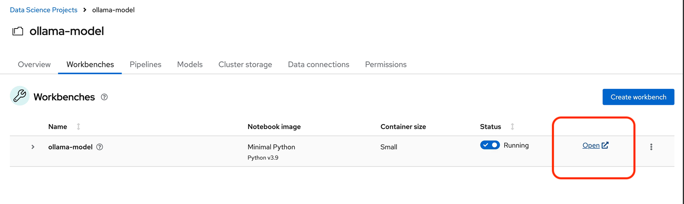
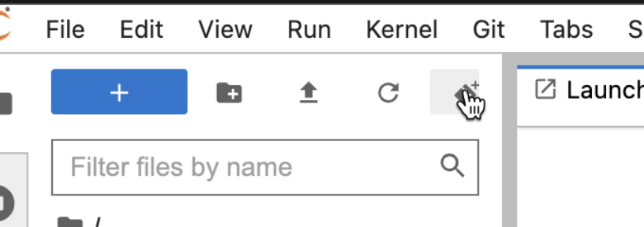
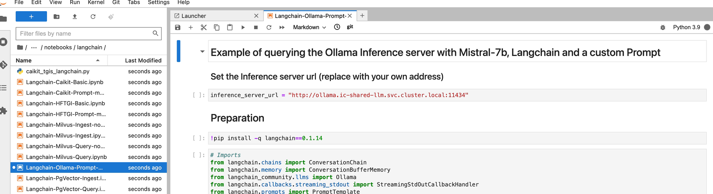
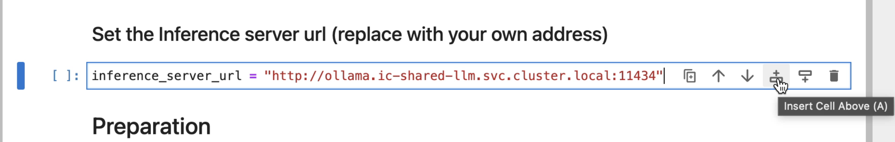
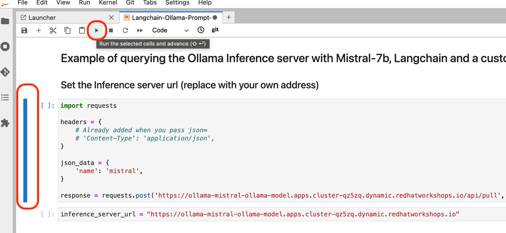

Jupyter Notebooks
Open JupyterLab
JupyterLab enables you to work with documents and activities such as Jupyter notebooks, text editors, terminals, and custom components in a flexible, integrated, and extensible manner. For a demonstration of JupyterLab and its features, you can view this video.
Return to the ollama-model workbench dashboard in the OpenShift AI console.
-
Select the Open link to the right of the status section.
 -
When the new window opens, use the OpenShift admin user & password to login to JupyterLab.
-
Click Allow selected permissions button to complete login to the notebook.
| If the OPEN link for the notebook is grayed out, the notebook container is still starting. This process can take a few minutes & up to 20+ minutes depending on the notebook image we opted to choose. |
Inside JupyterLab
This takes us to the JupyterLab screen where we can select multiple options / tools / to work to begin our data science experimentation.
Our first action is to clone a git repository that contains a collection of LLM projects including the notebook we are going to use to interact with the LLM.
Clone the github repository to interact with the Ollama Framework from this location: https://github.com/rh-aiservices-bu/llm-on-openshift.git
-
Copy the URL link above
-
Click on the Clone a Repo Icon above explorer section window.
 -
Paste the link into the clone a repo pop up, make sure the included submodules are checked, then click the clone.
-
Navigate to the llm-on-openshift/examples/notebooks/langchain folder:
-
Then open the file: Langchain-Ollama-Prompt-memory.ipynb
 -
Explore the notebook, and then continue.
Configure the Ollama Framework with a Large Language Model
-
From the Notebook page, add a new cell above the inference url

The Ollama Model Runtime we deployed using the Single Model Serving Platform in OpenShift AI is a Framework that can host various large language models. It is currently running, but is waiting for the command to instruct the framework on which model to download and serve.
-
To load the mistral model, we are going use the following python code to instruct the runtime to download and serve a quantized 4 bit version of the mistral large language model.
-
Copy the code below and paste this code in the new cell added to the notebook in the previous step.
import requests
headers = {
# Already added when you pass json=
# 'Content-Type': 'application/json',
}
json_data = {
'name': 'mistral',
}
response = requests.post('https://your-endpoint/api/pull', headers=headers, json=json_data, verify=False)We’ll need to modify the url in the bottom line beginning with response = in the next step.
Update the Inference Endpoints
Head back to the RHOAI ollama-model workbench dashboard, from the models tab, copy the inference endpoint for the ollama-mistral model.
Return the Jupyter notebook
We will be updating two cells with the inference endpoint.
-
Replace the https://your-endopint section of the python code we copied into the new cell. Ensure you leave the /api/pull portion appended to the url.
-
Replace the red text inside the quotation marks for the inference_server_url with the same inference endpoint url.
Execute cell code to assemble the langchain components
-
We can now start executing the code in the cells, begin with the new cell added to the top. Click on the cell to activate blue indicator to the left of the cell. Next click on the play icon to run the selected cells and advanced to the next. While the cell is executing, an * (asterisk icon) will appear in the brackets, when complete this will change to a number.
-
You will receive a message about an Unverified HTTPs request. This is because we didn’t use authentication for this application. You can ignore this for this lab experience, but in production we would enable authentication using Authorino secured connections.
-
The mistral model files are now being downloaded to the Ollama Framework. This may take a few minutes, the * will change to a number when complete.
-
-
Continue executing through the cells.
-
Next we run the cell: !pip install -q langchain==0.1.14 ; there is a notice to update pip; ignore and continue.
-
The next cell imports the langchain components that provide the libraries and programming files to interact with our LLM.
-
This "Create the LLM instance" cell sets the variables that determine how we are going to interact with our model and how it should respond - sets that into an array using llm variable.
-
Next run the "Create the prompt" cell. Here we are setting the template variable with the details of how the model operate, including constraints and boundries when generating the response. We often to not experience the system message when interacting with an LLM, but this is a standard field that is included along with the user prompt.
-
Continue executing the cells, "memory for the conversation" keeps the previous context / conversation history so full history of the chat conversation is sent as part of the prompt.
-
The create the chain cell, combines each of previous variables: llm, prompt, memory, and adds a verbose boolean to create the conversation variable, which will be sent to Models inference endpoint running in OpenShift AI. The verbose option set to true displays the entire conversation sent to the Model in the notebook before the Models (AI’s) response.
In the next, section, we’ll send our first input to the running Mistral Large Language Model.